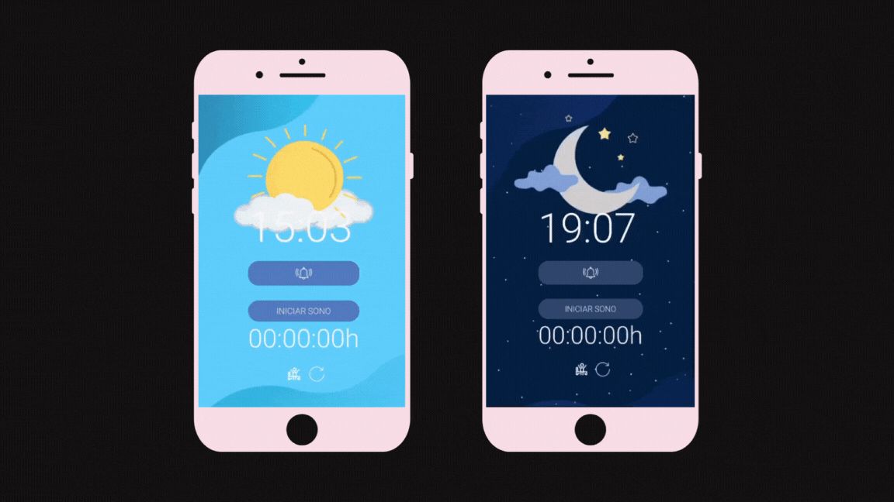
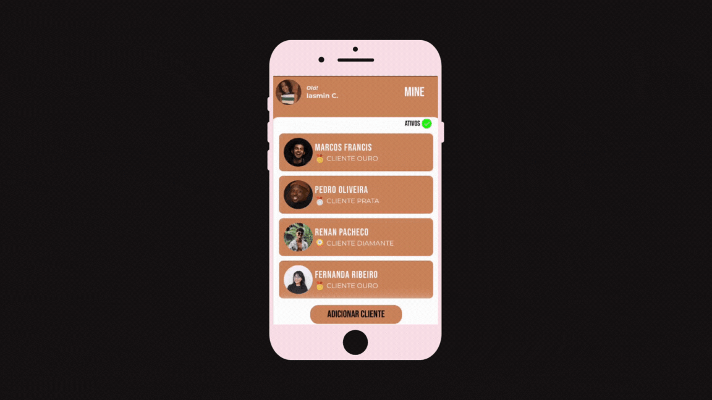

02 de Julho de 2023
Projeto Controle do Sono

Este é um projeto mobile criado para obter controle de horas dormidas.
Foi realizado com as ferramentas HTML, CSS e JavaScript, onde o usuario pode cronometrar o tempo de sono e/ou cochilo.
Conta com as funcionalidades: adicionar alarme, iniciar contagem de horas dormidas, parar contador e reinicia-lo.
Este projeto tem como objetivo: o aprendizado profissional, controlar insonias e regular o sono.
26 de Junho de 2023
Projeto Bar Mine

Este é um projeto mobile criado para gerenciamento de clientes e comandas.
Foi realizado com as ferramentas HTML, CSS e JavaScript, onde o colaborador do Bar Mine pode registrar o cliente, realizar o pedido e fechar a comanda com pequenos cliques na palma de sua mão.
Conta com as funcionalidades: adicionar cliente, realizar o pedido do cliente e finalizar seu pagamento.
Este projeto tem como objetivo: o aprendizado profissional, facilitar o trabalho dos colaboradores, aumentar sua produtividade e evitar falhas/perdas das comandas de papel.